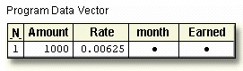

Overview
Introduction
You can execute SAS statements repeatedly by placing them in a DO loop. DO loops can execute any number of times in a single iteration of the DATA step. Using DO loops enables you to write concise DATA steps that are easier to change and debug.
For example, the DO loop in this program eliminates the need for 12 separate programming statements to calculate annual earnings:
data finance.earnings;
set finance.master;
Earned=0;
do count=1 to 12;
earned+(amount+earned)*(rate/12);
end;
run;
You can also use DO loops to
- generate data
- conditionally execute statements
- read data
This chapter shows you how to construct DO loops and how to include DO loops in your programs.
Objectives
- construct a DO loop to perform repetitive calculations
- control the execution of a DO loop
- generate multiple observations in one iteration of the DATA step
- construct nested DO loops.
Constructing DO Loops
Introduction
DO loops process a group of statements repeatedly rather than once. This can greatly reduce the number of statements required for a repetitive calculation. For example, these 12 Sum statements compute a company's annual earnings from investments. Notice that all 12 statements are identical.
data finance.earnings;
set finance.master;
Earned=0;
earned+(amount+earned)*(rate/12);
earned+(amount+earned)*(rate/12);
earned+(amount+earned)*(rate/12);
earned+(amount+earned)*(rate/12);
earned+(amount+earned)*(rate/12);
earned+(amount+earned)*(rate/12);
earned+(amount+earned)*(rate/12);
earned+(amount+earned)*(rate/12);
earned+(amount+earned)*(rate/12);
earned+(amount+earned)*(rate/12);
earned+(amount+earned)*(rate/12);
earned+(amount+earned)*(rate/12);
run;
Each Sum statement accumulates the calculated interest earned for an investment for one month. The variable Earned is created in the DATA step to store the earned interest. The investment is compounded monthly, meaning that the value of the earned interest is cumulative.
A DO loop enables you to achieve the same results with fewer statements. In this case, the Sum statement executes 12 times within the DO loop during each iteration of the DATA step.
data finance.earnings;
set finance.master;
Earned=0;
do count=1 to 12;
earned+(amount+earned)*(rate/12);
end;
run;
General Form of DO Loops
To construct a DO loop, you use the DO and END statements along with other SAS statements.
General form, simple iterative DO loop:
DO index-variable=start TO stop BY increment;
SAS statements
END;
where the start, stop, and increment values
- are set upon entry into the DO loop
- cannot be changed during the processing of the DO loop
- can be numbers, variables, or SAS expressions
The END statement terminates the loop
| Note | The value of the index variable can be changed within the loop |
|---|
When creating a DO loop with the iterative DO statement, you must specify an index variable. The index variable stores the value of the current iteration of the DO loop. You can use any valid SAS name.
DO index-variable=start TO stop BY increment;
SAS statements
END;
Next, specify the conditions that execute the DO loop. A simple specification contains a start value, a stop value, and an increment value for the DO loop.
DO index-variable=start TO stop BY increment;
SAS statements
END;
The start value specifies the initial value of the index variable.
DO index-variable=start TO stop BY increment;
SAS statements
END;
The TO clause specifies the stop value. The stop value is the last index value that executes the DO loop.
DO index-variable=start TO stop BY increment;
SAS statements
END;
The optional BY clause specifies an increment value for the index variable. Typically, you want the DO loop to increment by 1 for each iteration. If you do not specify a BY clause, the default increment value is 1.
DO index-variable=start TO stop BY increment;
SAS statements
END;
For example, the specification below increments the index variable by 1, resulting in quiz values of 1, 2, 3, 4, and 5:
do quiz=1 to 5;
By contrast, the following specification increments the index variable by 2, resulting in rows values of 2, 4, 6, 8, 10, and 12:
do rows=2 to 12 by 2;
DO Loop Execution
Using the form of the DO loop that was just presented, let's see how the DO loop executes in the DATA step. This example calculates how much interest was earned each month for a one-year investment.
data finance.earnings;
Amount=1000;
Rate=.075/12;
do month=1 to 12;
Earned+(amount+earned)*(rate);
end;
run;
This DATA step does not read data from an external source. When submitted, it compiles and then executes only once to generate data. During compilation, the program data vector is created for the Finance.Earnings data set.
When the DATA step executes, the values of Amount and Rate are assigned.
Next, the DO loop executes. During each execution of the DO loop, the value of Earned is calculated and is added to its previous value; then the value of month is incremented. On the twelfth execution of the DO loop, the program data vector looks like this:

After the twelfth execution of the DO loop, the value of month is incremented to 13. Because 13 exceeds the stop value of the iterative DO statement, the DO loop stops executing, and processing continues to the next DATA step statement. The end of the DATA step is reached, the values are written to the Finance.Earnings data set, and in this example, the DATA step ends. Only one observation is written to the data set.
| SAS Data Set Finance.Earnings | |||
|---|---|---|---|
| Amount | Rate | month | Earned |
| 1000 | 0.00625 | 13 | 77.6326 |
Notice that the index variable month is also stored in the data set. In most cases, the index variable is needed only for processing the DO loop and can be dropped from the data set.
Counting Iterations of DO Loops
In some cases, it is useful to create an index variable to count and store the number of iterations in the DO loop. Then you can drop the index variable from the data set.
data work.earn (drop=counter);
Value=2000;
do counter=1 to 20;
Interest=value*.075;
value+interest;
Year+1;
end;
run;
| SAS Data Set Work.Earn | ||
|---|---|---|
| Value | Interest | Year |
| 8495.70 | 592.723 | 20 |
The Sum statement Year+1 accumulates the number of iterations of the DO loop and stores the total in the new variable Year. The final value of Year is then stored in the data set, whereas the index variable counter is dropped. The data set has one observation.
Explicit OUTPUT Statements
To create an observation for each iteration of the DO loop, place an OUTPUT statement inside the loop. By default, every DATA step contains an implicit OUTPUT statement at the end of the step. But placing an explicit OUTPUT statement in a DATA step overrides automatic output, causing SAS to add an observation to the data set only when the explicit OUTPUT statement is executed.
The previous example created one observation because it used automatic output at the end of the DATA step. In the following example, the OUTPUT statement overrides automatic output, so the DATA step writes 20 observations.
data work.earn;
Value=2000;
do Year=1 to 20;
Interest=value*.075;
value+interest;
output;
end;
run;
| SAS Data Set Work.Earn (Partial Listing) | ||
|---|---|---|
| Value | Year | Interest |
| 2150.00 | 1 | 150.000 |
| 2311.25 | 2 | 161.250 |
| 2484.59 | 3 | 173.344 |
| 2670.94 | 4 | 186.345 |
| 2871.26 | 5 | 200.320 |
| 3086.60 | 6 | 215.344 |
| 3318.10 | 7 | 231.495 |
| 3566.96 | 8 | 248.857 |
| ... | ... | ... |
| 8495.70 | 20 | 592.723 |
Decrementing DO Loops
You can decrement a DO loop's index variable by specifying a negative value for the BY clause. For example, the specification in this iterative DO statement decreases the index variable by 1, resulting in values of 5, 4, 3, 2, and 1.
DO index-variable=5 to 1 by -1;
SAS statements
END;
When you use a negative BY clause value, the start value must always be greater than the stop value in order to decrease the index variable during each iteration.
DO index-variable=5 to 1 by -1;
SAS statements
END;
Specifying a Series of Items
You can also specify how many times a DO loop executes by listing items in a series.
General form, DO loop with a variable list:
DO index-variable=value1, value2, value3...;
SAS statements
END;
where values can be character or numeric.
When the DO loop executes, it executes once for each item in the series. The index variable equals the value of the current item. You must use commas to separate items in the series.
To list items in a series, you must specify either
- all numeric values
DO index-variable=2,5,9,13,27;
SAS statements
END; - all character values, with each value enclosed in quotation marks
DO index-variable='MON','TUE','WED','THR','FRI';
SAS statements
END; - all variable names- the index variable takes on the values of the specified variables
DO index-variable=win,place,show;
SAS statements
END;
Variable names must represent either all numeric or all character values. Do not enclose variable names in quotation marks.
Nesting DO Loops
Iterative DO statements can be executed within a DO loop. Putting a DO loop within a DO loop is called nesting.
do i=1 to 20;
SAS statements
do j=1 to 10;
SAS statements
end;
SAS statements
end;
The following DATA step computes the value of a one-year investment that earns 7.5% annual interest, compounded monthly.
data work.earn;
Capital=2000;
do month=1 to 12;
Interest=capital*(.075/12);
capital+interest;
end;
run;
Let's assume the same amount of capital is to be added to the investment each year for 20 years. The new program must perform the calculation for each month during each of the 20 years. To do this, you can include the monthly calculations within another DO loop that executes 20 times.
data work.earn;
do year=1 to 20;
Capital+2000;
do month=1 to 12;
Interest=capital*(.075/12);
capital+interest;
end;
end;
run;
During each iteration of the outside DO loop, an additional 2,000 is added to the capital, and the nested DO loop executes 12 times.
data work.earn;
do year=1 to 20;
Capital+2000;
do month=1 to 12;
Interest=capital*(.075/12);
capital+interest;
end;
end;
run;
Remember, in order for nested DO loops to execute correctly, you must
- assign a unique index-variable name in each iterative DO statement.
data work.earn; do year=1 to 20; Capital+2000; do month=1 to 12; Interest=capital*(.075/12); capital+interest; end; end; run; - end each DO loop with an END statement
data work.earn; do year=1 to 20; Capital+2000; do month=1 to 12; Interest=capital*(.075/12); capital+interest; end; end; run;
| Note | It is easier to manage nested DO loops if you indent the statements in each DO loop as shown above |
|---|
Iteratively Processing Data That Is Read from a Data Set
So far you have seen examples of DATA steps that use DO loops to generate one or more observations from one iteration of the DATA step. Now let's look at a DATA step that reads a data set to compute the value of a new variable.
The SAS data set Finance.CDRates, shown below, contains interest rates for certificates of deposit (CDs) that are available from several institutions.
| SAS Data Set Finance.CDRates | ||
|---|---|---|
| Institution | Rate | Years |
| MBNA America | 0.0817 | 5 |
| Metropolitan Bank | 0.0814 | 3 |
| Standard Pacific | 0.0806 | 4 |
Suppose you want to compare how much each CD will earn at maturity with an investment of $5,000. The DATA step below creates a new data set, Work.Compare, that contains the added variable, Investment.
data work.compare(drop=i);
set finance.cdrates;
Investment=5000;
do i=1 to years;
investment+rate*investment;
end;
run;
The index variable is used only to execute the DO loop, so it is dropped from the new data set. Notice that the data set variable Years is used as the stop value in the iterative DO statement. As a result, the DO loop executes the number of times that are specified by the current value of Years. During the first iteration of the DATA step, for example, the DO loop executes five times.
During each iteration of the DATA step,
- an observation is read from Finance.CDRates
- the value 5000 is assigned to the variable Investment
- the DO loop executes, based on the current value of Years
- the value of Investment is computed (each time that the DO loop executes), using the current value of Rate
At the bottom of the DATA step, the first observation is written to the Work.Compare data set. Control returns to the top of the DATA step, and the next observation is read from Finance.CDRates. These steps are repeated for each observation in Finance.CDRates. The resulting data set contains the computed values of Investment for all observations that have been read from Finance.CDRates.
| SAS Data Set Work.Compare | |||
|---|---|---|---|
| Institution | Rate | Years | Investment |
| MBNA America | 0.0817 | 5 | 7404.64 |
| Metropolitan Bank | 0.0814 | 3 | 6323.09 |
| Standard Pacific | 0.0806 | 4 | 6817.57 |
Conditionally Executing DO Loops
The iterative DO statement requires that you specify the number of iterations for the DO loop. However, there are times when you want to execute a DO loop until a condition is reached or while a condition exists, but you don't know how many iterations are needed.
Suppose you want to calculate the number of years that are required for an investment to reach $50,000. In the DATA step below, using an iterative DO statement is inappropriate because you are trying to determine the number of iterations required for Capital to reach $50,000.
data work.invest;
do year=1 to ? ;
Capital+2000;
capital+capital*.10;
end;
run;
The DO WHILE and DO UNTIL statements enable you to execute DO loops based on whether a condition is true or false.
Using the DO UNTIL Statement
The DO UNTIL statement executes a DO loop until the expression is true.
General form, DO UNTIL statement:
DO UNTIL(expression);
more SAS statements
END;
where expression is a valid SAS expression enclosed in parentheses.
The expression is not evaluated until the bottom of the loop, so a DO UNTIL loop always executes at least once. When the expression is evaluated as true, the DO loop is not executed again.
Assume you want to know how many years it will take to earn $50,000 if you deposit $2,000 each year into an account that earns 10% interest. The DATA step that follows uses a DO UNTIL statement to perform the calculation until the value is reached. Each iteration of the DO loop represents one year of earning.
data work.invest;
do until(Capital>=50000);
capital+2000;
capital+capital*.10;
Year+1;
end;
run;
During each iteration of the DO loop,
- 2000 is added to the value of Capital to reflect the annual deposit of $2,000
- the value of Capital with 10% interest is calculated
- the value of Year is incremented by 1
Because there is no index variable in the DO UNTIL statement, the variable Year is created in a Sum statement to count the number of iterations of the DO loop. This program produces a data set that contains the single observation shown below. To accumulate more than $50,000 in capital requires 13 years (and 13 iterations of the DO loop).
| SAS Data Set Work.Invest | |
|---|---|
| Capital | Year |
| 53949.97 | 13 |
Using the DO WHILE Statement
Like the DO UNTIL statement, the DO WHILE statement executes DO loops conditionally. You can use the DO WHILE statement to execute a DO loop while the expression is true.
General form, DO WHILE statement:
DO WHILE(expression);
more SAS statements
END;
where expression is a valid SAS expression enclosed in parentheses.
An important difference between the DO UNTIL and DO WHILE statements is that the DO WHILE expression is evaluated at the top of the DO loop. If the expression is false the first time it is evaluated, then the DO loop never executes. For example, in the following program, if the value of Capital is less than 50,000, the DO loop does not execute.
data work.invest;
do while(Capital>=50000);
capital+2000;
capital+capital*.10;
Year+1;
end;
run;
Using Conditional Clauses with the Iterative DO Statement
You have seen how the DO WHILE and DO UNTIL statements enable you to execute statements conditionally and how the iterative DO statement enables you to execute statements a set number of times, unconditionally.
DO WHILE(expression);
DO UNTIL(expression);
DO index-variable=start TO stop BY increment;
Now let's look at a form of the iterative DO statement that combines features of both conditional and unconditional execution of DO loops.
In this DATA step, the DO UNTIL statement determines how many years it takes (13) for an investment to reach $50,000.
data work.invest;
do until(Capital>=50000);
Year+1;
capital+2000;
capital+capital*.10;
end;
run;
| SAS Data Set Work.Invest | |
|---|---|
| Capital | Year |
| 53949.97 | 13 |
Suppose you also want to limit the number of years that you invest your capital to 10 years. You can add the UNTIL or WHILE expression to an iterative DO statement to further control the number of iterations. This iterative DO statement enables you to execute the DO loop until Capital is greater than or equal to 50000 or until the DO loop executes 10 times, whichever occurs first.
data work.invest(drop=i);
do i=1 to 10 until(Capital>=50000);
Year+1;
capital+2000;
capital+capital*.10;
end;
run;
| SAS Data Set Work.Invest | |
|---|---|
| Capital | Year |
| 35062.33 | 10 |
In this case, the DO loop stops executing after 10 iterations, and the value of Capital never reaches 50000. If you increase the amount added to Capital each year to 4000, the DO loop stops executing after the eighth iteration when the value of Capital exceeds 50000.
data work.invest(drop=i);
do i=1 to 10 until(Capital>=50000);
Year+1;
capital+4000;
capital+capital*.10;
end;
run;
| SAS Data Set Work.Invest | |
|---|---|
| Capital | Year |
| 50317.91 | 8 |
The UNTIL and WHILE specifications in an iterative DO statement function similarly to the DO UNTIL and DO WHILE statements. Both statements require a valid SAS expression enclosed in parentheses.
UNTIL(expression);
DO index-variable=start TO stop BY increment WHILE(expression);
The UNTIL expression is evaluated at the bottom of the DO loop, so the DO loop always executes at least once. The WHILE expression is evaluated before the execution of the DO loop. So, if the condition is not true, the DO loop never executes.
Creating Samples
Because it performs iterative processing, a DO loop provides an easy way to draw sample observations from a data set. For example, suppose you would like to sample every tenth observation of the 5,000 observations in Factory.Widgets. Start with a simple DATA step:
data work.subset;
set factory.widgets;
run;
You can create the sample data set by enclosing the SET statement in a DO loop. Use the start, stop, and increment values to select every tenth observation of the 5,000. Add the POINT= option to the SET statement, setting the POINT= option equal to the index variable that is used in the DO loop. (You learned about the POINT= option in Chapter, Reading SAS Data Sets.)
data work.subset;
do sample=10 to 5000 by 10;
set factory.widgets point=sample;
end;
run;
Remember that, in order to prevent continuous DATA step looping, you need to add a STOP statement when using the POINT= option. Then, because the STOP statement prevents the output of observations at the end of the DATA step, you also need to add an OUTPUT statement.
Place the statement inside the DO loop in order to output each observation that is selected. (If the OUTPUT statement were placed after the DO loop, only the last observation would be written.)
data work.subset;
do sample=10 to 5000 by 10;
set factory.widgets point=sample;
output;
end;
stop;
run;
When the program runs, the DATA step reads the observations that are identified by the POINT= option in Factory.Widgets. The values of the POINT= option are provided by the DO loop, which starts at 10 and goes to 5,000 in increments of 10. The data set Work.Subset contains 500 observations.
Summary
Text Summary
Purpose of DO Loops
DO loops process groups of SAS statements repeatedly, reducing the number of statements that are required in repetitive calculations.
Syntax of Iterative DO Loops
To construct an iterative DO loop, specify an index variable and the conditions that will execute the loop. These conditions include a start value for the index variable, a stop value, and an increment value. Start, stop, and increment values can be any number, numeric variable, or SAS expression that results in a number.
DO Loop Execution
During each iteration of a DO loop, new values are created in the SAS program data vector. When the loop's index value exceeds the stop value, the DO loop stops, and processing continues with the following DATA step statement.
Counting DO Loop Iterations
A simple way to track DO loop iterations is to create a temporary counting variable, then drop this variable from the data set. Or, include an OUTPUT statement within the DO loop to write an observation for each iteration. This overrides the automatic generation of output at the end of the DATA step.
Decrementing DO Loops
You can decrement a DO loop by specifying a negative value for the BY clause. The start value must be greater than the stop value.
Specifying a Series of Items
You can specify how many times a DO loop executes by listing items in a series; the DO loop will execute once for each item, with the index variable equal to the value of each item. A series can consist of all numeric values, all character values (enclosed in quotation marks), or all variable names (without quotation marks).
Nesting DO Loops
DO loops can run within DO loops, as long as you assign a unique index variable to each loop and terminate each DO loop with its own END statement.
Iteratively Processing Data That Is Read from a Data Set
You can use a DO loop to read a data set and compute the value of a new variable. DO loop start and stop values, for example, can be read from a data set.
Conditionally Executing DO Loops
The DO UNTIL statement executes a DO loop until a condition is true. Because the expression is not evaluated until the bottom of the loop, a DO UNTIL loop will execute at least once. The DO WHILE statement is used to execute a DO loop while a condition is true. Because the DO WHILE statement is evaluated at the top of the DO loop, if the expression is false the first time it is evaluated, then the DO loop never executes.
Using Conditional Clauses within Iterative DO Statements
DO WHILE and DO UNTIL statements can be used within iterative DO loops to combine conditional and unconditional execution.
Creating Samples
DO loops provide an easy way to create samples from other data sets. Enclose the SET statement in a DO loop, using the start, stop, and increment values to select the observations. Add the POINT= option to the SET statement, setting it equal to the index variable of the DO loop. Then add a STOP statement to prevent DATA step looping, and add an OUTPUT statement to write DATA step output.
Points to Remember
- If you do not specify a BY clause, then the increment value for DO loops is 1
- In most cases, the index variable is needed only for processing the DO loop and can be dropped from the data set
- The index variable is always incremented by one value beyond the stop value unless you terminate the DO loop in some other manner
- It's easier to manage nested DO loops if you indent the statements in each loop
- In order for nested DO loops to execute correctly, you must
- assign a unique index-variable name in each iterative DO statement
- end each DO loop with an END statement